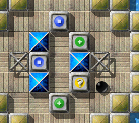
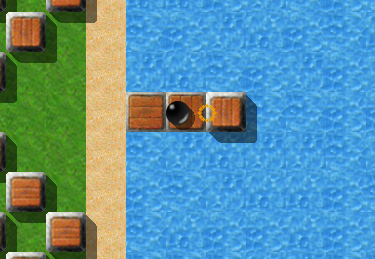
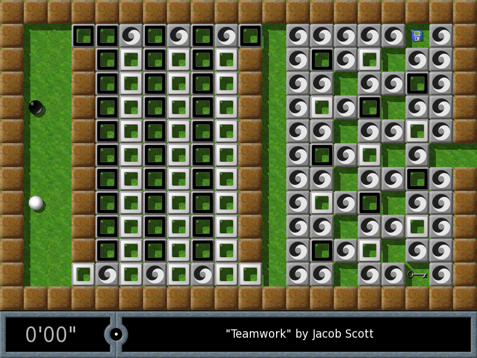

Ce manuel décrit comment installer Enigma et y jouer. Il correspond à Enigma version 1.20.
Copyright © 2003, 2004, 2005, 2006, 2007, 2008, 2009, 2010, 2011, 2012, 2013 Daniel Heck (dheck@gmx.de) and other contributors
La copie et la distribution de ce fichier, avec ou sans modification, sont autorisés sans royalty à condition que la notice de copyright et la présente notice soient préservées.
| 1. Introduction | Comment commencer | |
| 2. Le jeu | Comment jouer à Enigma | |
| 3. Quelques objets du jeu | Description de quelques objets du jeu | |
| 4. Expertise | Options élaborés et administration | |
| 5. Triche | Astuces pour certains niveaux difficiles | |
| 6. Crédits | Crédits et ’Saints-Clouds | |
| 1.1 A propos d’Enigma | Certains faits sur Enigma | |
| 1.2 Installation | Se procurer et installer Enigma | |
| 1.3 Distribuer Enigma | Donnez des copies à vos amis ! |
Enigma n’est pas vraiment un jeu d’esprit. Enigma est en réalité une immense collection de jeux d’esprit, et chacun de ses 550 uniques niveaux défie l’intelligence, la dextérité et la volonté des joueurs de manière inédite. Enigma est facile à apprendre, ludique et parfois difficile. On peut y jouer à tout âge. Il contient des centaines de niveaux. Et comme si ce n’était pas assez, il est gratuit. Si vous aimez les jeux d’esprit et que vous avez le geste sûr, Enigma vous occupera pendant des heures.
L’object du jeu est de trouver et dévoiler des paires de pierres ‘Oxydes’ de même couleur. Simple? Oui. Facile? Certes non! Des pièges cachés, d’immenses labyrinthes, des rayons laser, et surtout des énigmes à s’arracher les cheveux bloqueront le chemin qui vous mène aux Oxydes. Les objets du jeu (il y en a des centaines), agissent de manière inattendue, et comme la plupart obéissent aux lois de la physique (du moins la physique un peu spéciale d’Enigma), les contrôler avec la souris n’est pas toujours aisé ...
A l’origine, le projet Enigma a été fondé pour perpétuer l’esprit des jeux de la série des ’Oxyd , lorsque leur éditeur a décidé en 2002 de quitter le monde du jeu. Les amateurs d’Oxyd trouveront à Enigma un air familier. Mais au cours des ans, Enigma a phagocyté des idées d’innombrables autres jeux, en leur donnant son propre style.
Enigma existe pour Windows, Mac OS X, et la plupart des Linux et autres Unix modernes. Il a été traduit en plusieurs langues. Même ce manuel est disponible en plusieurs langues (et cette phrase est autoréférentielle; enfin la phrase précédente; quoique la présente phrase aussi).
Sur homepage, vous trouverez des copies d’écran, des téléchargements, des news, et la version la plus récente de ce manuel: manual. On peut joindre les développeurs par email à enigma-devel@nongnu.org.
Enigma est un logiciel libre: vous êtes encouragés à le copier et en faire cadeau autour de vous (Distribuer Enigma). Enigma est développé par un petit groupe de volontaires, qui y consacrent leurs loisirs. Si vous aimez ce jeu n’hésitez pas à envoyer un email. C’est probablement la seule récompense qu’auront ses créateurs.
La dernière version d’Enigma peut être téléchargée à Download Page. On y trouve des packages pour les systèmes d’exploitation suivants:
Il suffit d’exécuter après téléchargement, le fichier ‘.exe’ .
Des binaires existent pour des Linux comme SUSE, Redhat, ou Debian. Pour les autres, il faudra compiler le source.
Pas d’installation nécessaire pour la version OS X , il faut juste exécuter le fichier ‘.dmg’ ou ‘.tar.gz’ .
La page ’download contient en général des informations plus détaillées ou plus récentes . Si Enigma ne fonctionnait pas sur votre ordinateur, ne vous gênez pas pour demander à la liste postale d’Enigma (enigma-devel@nongnu.org).
Enigma est un logiciel libre placé sous la licence GNU General Public License (GPL). Cette licence accompagne toutes les versions d’Enigma (ou bien dans ‘COPYING’ ou alors dans ‘COPYING.txt’). Si tout ce que vous voulez est jouer à Enigma, vous n’aurez pas besoin de lire ce texte légal rédigé en anglais. En substance, il dit ceci: Jouez à Enigma tant que vous voulez, et n’oubliez pas de le distribuer autour de vous !
Si vous désirez modifer Enigma ou contribuer à son développement futur, lisez la license, au moins une fois dans votre vie. La GPL assure que Enigma restera un logiciel libre dans le futur. En particulier, si vous modifiez Enigma ou distribuez une version modifiée, vous ne devez empêcher quiconque d’utiliser, modifier, et distribuer Enigma et ses derivés.
Les deux paragraphes précédents ne remplacent pas la vraie license, mais la résument. Si vous avez des doutes, consultez la GPL ou demandez.
| 2.1 Pour commencer | Naviguer dans les menus et commencer un jeu | |
| 2.2 Règles du jeu | Comment jouer à Enigma | |
| 2.3 Contrôles | Commandes clavier et souris |
Après avoir lancé Enigma, vous voyez le menu principal, avec lequel vous pouvez commencer un nouveau jeu, régler quelques options, ou quitter le jeu. Les sections suivantes couvrent rapidement le menu des niveaux et le menu des options; tout le reste devrait être auto-explicatoire. Pour beaucoup de menus, il y a une aide en ligne, qu’on trouve en pressant la touche <F1> .
| 2.1.1 Le menu des niveaux | Choisir le prochain niveau | |
| 2.1.2 Le menu des paquets de niveaux | Choisir un paquet de niveaux | |
| 2.1.3 Options de jeu | Adaptez Enigma à vos goûts | |
| 2.1.4 L’inspecteur des niveaux | Informations détaillées sur un niveau |
En cliquant sur “Commencer partie” dans le menu principal, on découvre le menu des niveaux, qui ressemble à ceci:

Cet écran est divisé en trois parties: Celle du haut contient des informations à propos du niveau et du paquet de niveaux courants, celle du milieu montre une vue aérienne des niveaux actuellement disponibles, et celle du bas est une rangée de boutons (comme mon visage).
On peut se déplacer dans la liste des niveaux en utilisant les boutons en forme de flèches sur la droite, ou bien en utilisant les flèches du clavier. Pour commencer un nouveau jeu, il suffit de cliquer sur son image, ou de faire <Entrée>.
Enigma a deux réglages de difficulté : “facile” et “normal.” Pour alterner entre les deux, il faut utiliser le bouton avec des médailles en bas: Lorsque la médaille est en argent et accompagnée d’une plume, le réglage est sur “facile”, et quand elle est en or, le mode de jeu est plus difficile.
Les niveaux ne possèdent pas tous un mode “facile”; ceux qui en ont un sont repérés par une plume ou une médaille d’argent selon qu’ils ont déjà été résolus ou non.
La touche <F5> ou le clic sur le bouton <>>|> qui est en bas, permettent d’aller au niveau suivant. Le sens du mot “suivant” dans la phrase précédente dépend du mode sélectionné avec le bouton le plus à gauche de la rangée du bas:
Il se peut qu’un niveau soit aussi marqué par un triangle rouge surmonté d’un point d’exclamation (en haut à gauche). Cela arrive lorsque le niveau a été modifié après que vous l’avez résolu. Vous le verrez probablement après une mise à niveau d’Enigma.
On peut naviguer dans le menu des niveaux avec les touches suivantes:
Retourne au menu précédent
Affiche l’aide en ligne
Saute au prochain niveau, comme le fait le bouton <>>|>
Change le niveau sélectionné
Joue le niveau sélectionné
Va au prochain paquet de niveaux
Va au paquet de niveaux précédent
Enigma contient tellement de niveaux qu’ils ont été organisés en “paquets de niveaux”; et comme chaque version d’Enigma a vu naître de nouveaux niveaux, on a organisé les paquets de niveaux en “groupes”. Cette organisation est plus simple à l’usage qu’à la description.
Pour sélectionner un paquet de niveaux, il faut cliquer sur “Pack de niveaux” qui est dans le menu principal et dans le menu des niveaux.
Ce menu montre les groupes dans la colonne de gauche et les paquets de niveaux du groupe courant dans la colonne de droite. Les groupes actuellement fournis avec Enigma sont les suivants:
Un clic sur le bouton gauche sélectionne un paquet de niveaux.
Pour des descriptions plus détaillées sur les paquets de niveaux voyez Paquets utilisateur.
Le menus des options vous permet d’adapter Enigma à vos préférences.
Choisir la langue pour les menus et si possible pour les documents qui sont dans le niveau.
Alterne entre les modes plein écran et fenêtre. Alt-<Entrée> a le même effet, même en dehors du menu des options. Note: Sur certains systèmes il faut retourner au menu principal pour pouvoir retourner au mode plein écran.
Ce bouton permet de changer le mode vidéo utilisé par Enigma; il ne prend effet que lorsque l’on retourne au menu principal.
Si nécessaire, permet de régler la luminosité de l’écran.
Détermine à quelle vitesse la boule accélère quand on bouge la souris. Les flèches gauche et droite permettent de changer la vitesse de la souris durant le jeu.
Règle le volume des effets sonores durant le jeu.
Ce bouton vous permet de choisir le jeu d’effets sonores qu’Enigma va utiliser pendant le jeu. Si vous utilisez Enigma avec les fichiers de donnée d’Oxyd, cette option vous permet d’utiliser les sons d’Oxyd dans tout le jeu.
Le volume de la musique de fond qui passe dans les menus.
Alterne entre la stéréo “normale” , la stéréo“inversée” , et la mono (non, pas la monitrice, la monophonie).
Si mis sur ‘Auto’ Enigma essayera régulièrement de charger des scores ce qui mettra à jour les données de score, records du monde, PAR etc. See section Homologuer les scores.
Entrez votre nom ou alias qui sera attaché à enigma.score si vous le mettez à jour. See section Homologuer les scores.
Là où Enigma enregistre toutes vos données utilisateur. Voir le manuel de référence pour plus de détail.
Là où Enigma enregistre toutes vos images. Voir le manuel de référence pour plus de détail.
Pour lire des informations sur le niveau courant vous pouvez utiliser l’inspecteur des niveaux. Pour cela il faut cliquer-droit ou faire control-clic sur l’image du niveau dans le menu des niveaux.
Vous pouvez comparer vos scores au record du monde, au par, au score de l’auteur. Il y a même des statistiques sur combien de joueurs ont résolu ce niveau.
Vous pouvez aussi entrer une petite annotation sur le niveau, et le noter.
Sur certains systèmes, cette annotation ne peut être entrée qu’avec des codes ASCII.
La note traduit votre impression personnelle sur le niveau. ‘-’ veut dire pas d’opinion. 0 - très mauvais, 5 - moyen, 10 - le meilleur des meilleurs. La note sera expédiée avec vos scores (Homologuer les scores).
Enfin l’inspecteur des niveaux permet de voir les captures d’écran prises durant le jeu (Contrôles).
| 2.2.1 Paysages normaux | ||
| 2.2.2 Paysages à deux joueurs | ||
| 2.2.3 Paysages de méditation |
L’idée de base d’Enigma est simple: Dans la plupart des niveaux vous contrôlez une boule de billard noire (ou plutôt une sphère, vu sa fragilité et le bruit qu’elle fait en se brisant) qui doit trouver et “ouvrir” des paires de pierres appelées Oxydes. Les oxydes fermées ressemblent à ceci (il y a quatre variantes pour l’aspect, mais le comportement est le même):
Quand vous touchez une oxyde avec la boule noire, elle s’ouvre et révèle un motif coloré. Chaque niveau comprend deux oxydes de chaque couleur. Vous devez toucher successivement deux oxydes de la même couleur pour les ouvrir définitivement – si elles ne sont pas de la même couleur, la première se referme . Vous avez réussi un niveau lorsque vous avez ouvert toutes les paires d’oxydes qu’il contient . L’image suivante montre une paire d’oxydes vertes déjà ouvertes. Le point d’interrogation à l’intérieur de l’oxyde bleue montre que l’autre oxyde bleue est toujours cachée quelque part.
Au fait: Si ce n’est déjà fait, le moment est approprié pour démarrer Enigma et essayer quelques niveaux!
Il suffit de passer par-dessus un objet pour le ramasser. L’inventaire en bas de l’écran montre la liste des outils dont vous disposez. Au début d’un nouveau jeu vous n’avez que deux vies supplémentaires. L’image suivante montre un inventaire contenant une pelle, un morceau de papier, deux bâtons de dynamite, vos deux vies supplémentaires, et un parapluie:

L’objet le plus à gauche de l’inventaire peut être actionné en cliquant avec le bouton gauche: Il sera déposé sur le sol ou accomplira une certaine action. Par exemple, la dynamite prend feu quand on la dépose, et les ressorts vont propulser la boule noire. Un clic avec le bouton droit ou le bouton central de la souris réarrange les objets de l’inventaire.
Si, pour une quelconque raison, vous ne désirez pas prendre un objet, passez dessus tout en laissant appuyé le bouton gauche de la souris. Cela peut servir en certaines occasions.
Beaucoup de pierres peuvent être bougées en les poussant suffisamment fort. La plus utile des pierres mobiles est certainement celle qui est en bois, et qui peut servir à construire des ponts au-dessus de l’eau et de l’abîme. Cette image montre comment on peut construire un pont en empilant des blocs de bois dans l’eau:
Certains objets peuvent se transformer, en les éclairant avec un laser ou en les écrasant avec des pierres mobiles; et certaines pierres ont un comportement différent si on les actionne avec un des outils de l’inventaire: L’exemple le plus connu est la baguette magique.
Surtout ne vous laissez pas décourager par l’apparente complexité du jeu – le comportement de la plupart des objets devient évident au moment adéquat. Certains des objets les plus étranges sont décrits au Quelques objets du jeu.
Hélas non: Ce n’est pas un jeu en réseau; il n’y a d’ailleurs pas de niveaux avec vraiment deux joueurs, mais des niveaux à un joueur peuvent comporter deux boules pilotables par ledit joueur: La déjà connue boule noire, et une autre qui est blanche; un tel niveau se reconnaît à la présence d’un objet en forme de ’yin-yang’ dans l’inventaire; cet objet permet de choisir laquelle des deux boules on souhaite piloter:
Dans les niveaux dits de méditation vôtre rôle est très différent: Au lieu de chercher des oxydes qui se correspondent, vous devez placer des petites boules blanches dans des creux du sol. Le niveau est terminé dès que chaque petite boule blanche s’est immobilisée dans son petit nid douillet.

Ceci dit, toutes les boules blanches sont actionnées par la souris et un mouvement brusque de celle-ci peut faire sortir certaines d’entre elles de leur trou. Pour réussir un niveau de méditation, il faut un geste assuré et beaucoup de patience (d’où le nom de méditation donné à ces niveaux !).
Voici une liste des contrôles actifs en phase de jeu (pas besoin de les apprendre par coeur, cette liste est disponible par un appui sur la touche <F1> .):
Utilisation du premier outil de l’inventaire
Rotation de l’inventaire des outils
Retour au menu principal
Quitter le jeux d’emblée
Affichage de l’aide
Suicide de la boule noire
Recommence le niveau
Paysage suivant
Prochain paysage non résolu
Prend une photo du paysage
Diminuer la vitesse de la souris
Augmenter la vitesse de la souris
Affichage plein écran ou fenêtré
Retour à l’écran des niveaux
Il y a des dizaines d’objets différents dans le jeu Enigma. Ici seuls quelques-uns sont décrits. Si vous débutez en Enigma, c’est une bonne idée de commencer par les niveaux du package “tutorial”: Au démarrage du jeu, cliquer sur “Pack de niveaux”, puis sur le bouton “Enigma” en haut à gauche, puis “Tutoriel” à droite. En les jouant dans l’ordre, “Oxyd Stones 1” etc. le tutoriel vous montrera les objets et idées les plus importants du jeu, et certains des niveaux les plus faciles d’Enigma.
| 3.1 Outils | ||
| 3.2 Pierres |
| 3.1.1 Explosifs | Dynamite et bombes | |
| 3.1.2 Parapluies | ||
| 3.1.3 Drapeaux | Placer le point de résurrection |
Il y a trois sortes d’explosifs, que voici du moins dangereux au plus redoutable:
Le bâton de dynamite ne détruit que les objets les plus fragiles; son utilité est essentiellement de mettre le feu aux bombes, mais elle peut aussi servir à faire fondre des morceaux de glace . La bombe noire (la plus courante) est suffisamment puissante pour créer un cratère et détuire les pierres avoisinantes. La bombe blanche est thermonucléaire: Elle a la puissance de 5 bombes noires, et peut donc détruire la boule noire même si elle n’est pas très près: Il y intérêt à s’éloigner très vite si elle est allumée !

Une fois actionné, le parapluie confère à la boule noire, l’immunité, mais pendant 10 secondes seulement. Son effet est annoncé par un halo blanc autour de la boule noire, constant pendant 7 secondes, puis clignotant pendant les 3 dernières secondes: Ce clignotement signifie donc qu’on est en fin d’immunité.
Les drapeaux permettent de gérer le karma des boules: Normalement si une boule qui a encore des vies en réserve meurt, elle ressuscite au point de départ du niveau; si on a préalablement déposé un drapeau quelque part, ce n’est plus le cas: La boule réapparaît à l’endroit du drapeau. La couleur du drapeau est conforme à celle de la boule sur laquelle il agit.
| 3.2.1 Pierres mortelles | ||
| 3.2.2 Pierres d’échange | ||
| 3.2.3 Miroirs | ||
| 3.2.4 Pierres à sens unique | ||
| 3.2.5 Pierres Shogun | ||
| 3.2.6 Eboulis | ||
| 3.2.7 Pièces de puzzle | ||
| 3.2.8 Boîtes postales |

Il y a deux sortes de têtes de mort: Celle qui est représentée ci-dessus, et une variante que seules les boules noires porteuses de lunettes peuvent voir. Au moindre contact, elles tuent les boules.
Le chevalier noir est également mortel pour les boules désarmées. Il y a des tueurs mobiles: Les ’tops’ (toupies) et les ’rotors’ (croix tournantes); ils sont attirés par leur victime, laquelle a de préférence une forme sphérique et une couleur noire ...

En espace extérieur, une pierre d’échange est immobile. Mais si on la pousse vers une pierre adjacente, elle échange sa position avec celle de sa voisine, elle est donc utile pour ’faire bouger’ des pierres immobiles. Mais elle-même ne peut être bougée que grâce à un échange avec des pierres ’normales’.

Les miroirs (à droite sur la photo) réfléchissent les rayons laser, soit en arrière s’ils sont perpendiculaires à ceux-ci, soit à angle droit s’ils font un angle de 45 degrés par rapport à ceux-ci. Les prismes (à gauche) sont plus complexes: Chaque face agit comme un miroir, mais si le rayon tombe sur l’angle droit du prisme, il se divise en deux. Les prismes et miroirs peuvent être soit semi-transparents (aux extrémités de la photo; dans ce cas, le rayon est divisé en deux, une partie qui est réfléchie et une partie qui est transmise) soit opaques (au milieu de la photo). Ils peuvent être soit mobiles (en les poussant fort avec la boule noire) soit immobiles. Mais dans les deux cas on peut les orienter en les touchant avec la boule. La manipulation des prismes et miroirs est dangereuse pour les boules noires si elle est menée près d’un laser allumé ...

On ne peut les traverser que dans un seul sens. Des labyrinthes entiers peuvent être construits avec des pierres à sens unique, mais le plus souvent ils servent à vous obliger à finir une partie du niveau avant d’attaquer la suivante.
Une pierre à sens unique vous bloque vraiment? Peut-être une baguette magique vous servira-t-elle ...

Certains niveaux ont des cercles bleus par terre; ceux-ci actionnent quelque chose (ouverture de porte, allumage de lasers etc.) s’ils sont recouverts par des pierres shogun. Il y a trois sortes de pierres shogun: La plus petite (à gauche sur le portrait de famille) actionne les petits cercles bleus. Pour les cercles de taille moyenne, il faut réaliser l’empilement que l’on voit au milieu de la photo, en plaçant d’abord un shogun de taille moyenne, puis un petit shogun par-dessus. De façon générale, on ne peut empiler un shogun que sur shogun plus grand que lui, ou sur un sol nu. Pour les plus grands cercles bleus, il faut réaliser l’empilement de droite en amenant d’abord un grand shogun, puis en le recouvrant par un shogun moyen, et enfin en recouvrant le tout par un petit.

Les éboulis ne bougent que dans une direction, indiquée par la flèche qui est peinte dessus. Ils ne s’arrêtent que lorsqu’ils heurtent une autre pierre. Ils peuvent barrer vôtre chemin et vous devrez trouver un moyen de vous en débarrasser. Mais vous, n’embarrassez pas leur chemin, ou ils vous détruiraient.
Mais ils peuvent aussi être utiles: Ils ouvrent des oxydes quand ils les heurtent. Et vous pouvez les rediriger de plusieurs manières ...

Les pièces de puzzle peuvent être assemblées pour faire un puzzle complet. Elles ont des sortes de prises sur leurs côtés pour les assembler. Une fois l’assemblage terminé, on peut le pousser d’un bloc comme des pierres uniques, ce qui permet par exemple de construire des ponts en préfabriqué au-dessus de l’eau ou de l’abîme.
Lorsqu’on les touche avec une baguette magique, leur comportement est différent: Si le bloc est complet, il explose immédiatement. Sinon la rangée ou la colonne de pièces de puzzle dont fait partie celle qui a été touchée, est décalée circulairement soit dans le sens horizontal soit dans le sens vertical.
Il y a une variante rare des pièces de puzzle, que l’on trouve surtout dans les niveaux de Oxyd 1, et que l’on reconnaît à leur couleur orange (au lieu de bleue). Ces pierres sont immobiles, et leur comportement est celui que la baguette magique confère aux pièces de puzzle bleues: Explosion si le puzzle est complet, et décalage circulaire d’une rangée ou d’une colonne sinon.
La boîte aux lettres est une pierre en général prolongée par un tuyau formé de puzzles; à chaque contact avec une boîte aux lettres, la boule noire expédie au bout de ce tuyau, l’outil le plus à gauche de son inventaire. Mais une fois qu’un objet autre qu’un puzzle a été expédié, la poste est bloquée. En général on doit construire le tuyau en expédiant ses morceaux par la poste.
| 4.1 Paquets utilisateur | Historique, résultats recherche et Auto | |
| 4.2 Sauvegardes | Que sauvegarder pour la sécurité | |
| 4.3 Homologuer les scores | Que le monde sache comme vous réussissez | |
| 4.4 Mise à jour | Mettre à jour les scores et les niveaux |
Le menu des paquets de niveaux en dit plus sur le sujet. Le groupe ‘User’ contient trois paquets de niveaux, initialement vides: ‘Auto Folder’, ‘History’ and ‘Search Result’.
En cliquant sur le bouton ‘Search’ dans le menu des paquets de niveaux, vous pouvez effectuer une recherche dans l’ensemble des niveaux. Pour cela, placez la souris au-dessus de la zone de texte, puis entrez la chaîne de caractères à chercher. Vous pouvez effectuer une recherche par auteur, par titre ou par nom de fichier. La chaîne peut être entrée en minuscules sans changer le résultat. Par exemple, vous pouvez entrer “jump”. Le résultat de la recherche est fourni sous la forme d’un paquet de niveaux appelé “Search Results”.
Le paquet de niveaux ‘History’ est automatiquement mis à jour chaque fois que vous jouez un niveau. Cela peut être utile si vous cherchez un niveau auquel vous jouates la semaine dernière sans savoir quels mots-clés entrer pour le rechercher.
‘Auto Folder’ est un paquet de niveaux dont vous pouvez vous servir pour ajouter de nouveaux niveaux, par exemple que vous avez téléchargés, ou créés vous-même. Ces niveaux devraient être placés dans ‘levels/auto’ ou dans ‘User Path’ comme indiqué dans Options de jeu. Les niveaux qui sont dans ce dossier sont automatiquement chargés au démarrage d’Enigma.
Bien d’autres aspects utiles d’Enigma dépassent le cadre de ce manuel. Consultez le manuel de référence pour plus de détails.
Si vous craignez qu’une défaillance de vôtre disque dur vous fasse perdre tous vos scores, ou si vous voulez transférer ceux-ci vers un autre ordinateur, voici quelques informations sur l’état d’Enigma. Premièrement, jetez un oeil sur ‘User Path’ dans le menu Options de jeu . Vous pouvez vous contenter de sauvegarder tout le dossier – les fichiers importants étant ‘enigma.score’ et ‘state.xml’.
Si vous voulez homologuer vos scores, vous devez envoyer le fichier ‘enigma.score’ situé dans le dossier ‘User Path’. La page d’accueil vous donnera les détails sur la manière de procéder.
Pour la mise à jour automatique des records du monde, il suffit d’activer l’option ‘Ratings Update’.
Si vous n’avez pas personnalisé vôtre ancienne version d’Enigma, il vous suffit de la désinstaller avant d’installer la nouvelle version. Ainsi vos scores seront automatiquement mis à jour.
Mais si vous avez ajouté des niveaux à vôtre ancienne version d’Enigma, vous devrez les sauvegarder avant la désinstallation. Ensuite vous pouvez tranquillement désinstaller avant d’installer la nouvelle version.
L’ancien fichier ‘~/.enigmarc2’ pour les systèmes qui ont un environnement ‘HOME’ ou ‘.../Application Data/enigmarc.lua2’ pour les Windows sans HOME (des fenêtres sans maison? Comment cela se peut-il?) est automatiquement converti au nouveau format de fichier. Vous pouvez supprimer l’ancien fichier dès que vous avez réussi ne serait-ce qu’un seul niveau de Enigma 1.00.
Pour utiliser des niveaux que vous avez récupérés de l’ancienne version d’Enigma, consultez le manuel de référence.
Ce chapitre contient des indices pour certains des niveaux les plus difficiles. On vous conseille vraiment de ne pas lire les indices tant que vous n’êtes pas complètement bloqués. Certains niveaux sont vraiment difficiles (même les champions d’Enigma ne peuvent les résoudre en moins de quelques heures). Certains niveaux sont plus faciles en mode ’facile’ (Le menu des niveaux).
| 5.1 Promenade dans ‘Advanced tutorial’ | ||
| 5.2 Indices pour plusieurs niveaux |
Cette section a été écrite par Jakob Scott, le créateur des niveaux ’tutorial’. Les niveaux du chapitre ’tutorial’ sont censés être faciles, à l’exception du dernier d’entre eux (’advanced tutorial’), auquel les paragraphes suivants sont consacrés. Premier conseil: Lire tous les documents de chaque chambre dès qu’on y entre. Le but de ce jeu est donc de trouver, et toucher, toutes les oxydes du niveau, lequel est divisé en une vingtaine de chambres, regroupées en trois zones: La zone 1 est composée de chambres où on montre les éléments de base et certains sols de Enigma. La zone 2 est plus agressive, avec l’élaboration de stratégies parfois destinées à échapper à des ennemis. La zone 3 montre des interactions plus complexes entre objets Enigma. Dans ce niveau, les oxydes sont regroupées dans la chambre à laquelle on accède à la fin de la zone 3.
Au départ, on est dans une chambre fermée par une porte en haut, contenant un peu d’eau en bas à gauche, et un trou dans le mur droit.
Chambre 1: Traverser ce trou pour aller dans la chambre 2.
Chambre 2: Il suffit d’éviter les têtes de mort pour traverser cette chambre.
Chambre 3: Fabriquer un pont au-dessus de l’eau avec les morceaux de bois; frapper les pierres noires à droite; écarter les pierres mordorées du chemin (par exemple en les poussant vers la gauche), puis faire un pont vers la droite avec deux morceaux de bois.
Chambre 4: Aller vers la toupie; quand elle entre en chasse, la mener vers la gauche jusqu’à avoir les pierres centrales entre elle (à gauche) et la boule noire; entrer dans la chambre suivante.
Chambre 5: Le seul danger sont les têtes de mort du bas: Cette chambre montre certains sols: Dans l’ordre, le métal a des propriétés analogues au sol verdoyant vu juqu’ici, le sol rouge frotte plus, la glace frotte moins et l’espace sidéral ne frotte pas du tout, au point qu’il est impossible de changer de direction quand on le traverse.
Chambre 6: La pente ne pose aucun problème; aller vers la gauche en utilisant le sol inversé (quand on essaye d’aller vers la gauche, on va vers la droite etc.); au besoin, retourner le mulot peut aider.
Chambre 7: Commencer par gagner une vie supplémentaire en posant la pierre mobile sur la trappe du bas; la pousser d’abord un carreau vers le haut puis six carreaux vers la gauche; ensuite la pousser 5 carreaux plus bas et 2 carreaux vers la droite; ramasser une autre vie supplémentaire puis actionner l’autre trappe en y posant la pierre mobile, ce qui ouvre la porte à gauche vers la chambre suivante.
Chambre 8: Prendre la dynamite et l’allumer devant les pierres jaunes, ce qui libère le passage; la bêche n’est pas nécessaire mais on peut expérimenter avec.
Chambre 9: Pousser la pierre mobile la plus basse vers la gauche; les éboulis allant vers la droite bloquent le chemin; en déplaçant la pierre mobile la plus à droite, on laisse l’éboulis se produire; ramasser la baguette magique en faisant attention à ne pas encore actionner un éboulis avec, puis pousser la pierre qui est au-dessus de l’eau. Ensuite placer la baguette magique en tête de l’inventaire pour qu’elle soit active, et s’en servir sur les trois éboulis du haut, en faisant attention à ne pas se faire ensevelir; pousser la pierre de gauche pour entrer dans la chambre suivante.
Chambre 10: Actionner l’interrupteur; pousser les deux pierres mordorées dans l’eau; aller vers la gauche; pousser vers la gauche le bloc de bois du milieu, puis celui qui était juste au-dessus de lui, dans l’eau; pousser les autres morceaux de bois dans l’eau en une ligne pour fabriquer un pont; défoncer la fenêtre à grande vitesse (attention aux débris de verre); récupérer une vie supplémentaire et traverser le pont de bois jusqu’à la première chambre; passer par la porte désormais ouverte.
Dans la zone 2 on rencontre des rotors, qui ne sont pas très amicaux avec la boule noire; il s’agit de les amener à faire ce qu’on veut leur faire faire tout en s’en préservant. Jeter un coup d’oeil (sans bouger pour l’instant la pierre mobile); il s’agit de traverser les trois portes en haut.
Porte 1: Frapper la boule blanche sur la gauche pour libérer celle-ci (attention à ne pas traverser le sens unique noir); ramasser la cuillère puis pousser la boule blanche au travers du sens unique blanc, suffisamment fort pour qu’elle ne reste pas bloquée en chemin; maintenant traverser le sens unique noir et pousser la boule blanche au travers du corridor; la pousser au travers du sens unique blanc, suffisamment fort pour qu’elle ne reste pas dans le sens interdit. Une fois que la boule blanche a traversé, utiliser la cuillère: On est de retour au début du niveau, et plus enfermé; traverser la porte: La première des portes du haut est désormais ouverte.
Porte 2: Pousser la pierre mobile qui se trouve à droite de la chambre vers la droite, et courir; un document comportant des informations intéressantes devrait être apparu dans la porte qui sépare les zones 1 et 2; amener le rotor (par la même technique que pour la toupie) au-dessus du mur qui est à droite de la porte; retraverser la porte, puis le pont vers la chambre du bas; actionner l’interrupteur pour refermer la porte, puis retourner dans la chambre du départ. Longer le mur du haut de droite à gauche pour amener le rotor à gauche, puis longer le mur de gauche vers le bas pour faire descendre le rotor le long du mur gauche, jusqu’à ce qu’on ne l’entende plus bouger. Il devrait avoir actionné une trappe; actionner l’interrupteur pour rouvrir la porte et retourner dans la zone 2: La porte du milieu devrait être ouverte.
Porte 3: Pousser la pierre mobile qui a servi d’antre au rotor sur la trappe qui se trouve dans la chambre de départ du rotor; retourner dans la chambre de gauche: La troisième porte est ouverte. Traverser les trois portes.
Chambre 1: Il faut que le rayon du laser atteigne la pierre noire: Pousser le miroir qui est en bas à gauche, d’un carreau vers le bas et le toucher doucement jusqu’à ce qu’il soit orienté comme ceci: ’\’; pousser le miroir qui est en haut à gauche de 8 carreaux vers la gauche et un carreau vers le bas, puis l’orienter comme ceci: ’/’; pousser le miroir qui est en haut à droite de 2 carreaux vers le haut et 3 carreaux vers la droite, puis l’orienter ainsi: ’/’. Actionner l’interrupteur pour allumer le laser, tout en évitant son rayon; quand le pont sur la droite est construit, le traverser vers la droite.
Chambre 2: Ramasser quelques pièces; retourner dans la chambre précédente; en éteignant, puis rallumant, le laser, irradier avec son rayon, une des pièces de monnaie: Elle se se transforme en parapluie; ramasser ce parapluie après avoir éteint le laser, puis recommencer avec une autre pièce pour obtenir un autre parapluie. Poser une pièce à côté d’un des miroirs puis pousser ce miroir pour écraser la pièce; reprendre la pièce et l’irradier avec le rayon du laser pour la transformer en un marteau. Irradier le marteau avec le laser (en l’éteignant puis le rallumant) pour obtenir une épée; ramasser l’épée. (Au besoin, en écrasant d’autres pièces 2 fois avec les miroirs, puis en éclairant les pièces d’or obtenues avec le laser, on peut obtenir des vies supplémentaires). Remettre les miroirs dans leur position initiale, puis rallumer le laser, pour pouvoir retourner dans la chambre avec les chevaliers; y aller. Mettre l’épée en tête d’inventaire puis toucher 4 fois chaque chevalier. On peut passer.
Chambre 3: Actionner un parapluie pour traverser l’abîme des chambres en bas puis à droite; si le halo clignote, actionner l’autre parapluie.
Chambre 4: Toucher les oxydes dans l’ordre pour les activer, tout en évitant les pierres péteuses, dont l’odeur pestilentielle referme toutes les oxydes.
Le message près du coin en haut à droite contient un indice important.
Commencer par placer le premier shogun dans le coin en haut à gauche, puis le deuxième shogun au-dessus du cercle bleu de droite
Si le petit Poucet n’avait pas de pain, il ramasserait des morceaux de bois.
C’est une histoire sans queue ni tête: Quelle est la tête d’une souris après un tête-à-queue?
C’était le tout premier niveau du Sokoban originel: Il ne peut donc être si dur !
Pousser deux miroirs vers le haut et un vers le bas.
L’un des cercles bleus se comporte différemment.
Alignez les boules blanches horizontalement.
Ce niveau est à se taper la tête dans le mur.
Même après avoir ouvert les douze portes, vous ne pouvez toujours pas passer? Vous avez du rater quelque chose !
Déjà entendu parler du problème des trois corps?
Une astuce pour ce niveau se trouve dans “Easy shifting’.
Une astuce pour ce niveau se trouve dans “Running Rings”.
1) Commencer par chercher la disquette et la baguette magique (ils sont nécessaires); 2) Toujours les garder avec soi; 3) Certaines pierres se ressemblent comme les deux Pôles mais sont comme Pierre et Paul.
Encombrez le laser.
Expérimentez des métamorphoses !
Qui sème le vent récolte la tempête.
Commencez par trouver la baguette magique.
Ne mettez pas les outils dangereux à la portée des enfants.
Grimpez précautionneusement l’échelle.
Y a-t-il de l’écho?
Utilisez le code PIN, ou votre encyclopédie si vous n’arrivez pas à retenir le numéro.
Le document de la chambre de gauche vous montre comment arranger les pierres sur les premières rangées de trappes; à partir de là, utilisez le code de couleurs de la chambre de gauche.
Ne laissez pas le laser vous griller!
Pas moyen de quitter le premier écran? Commencez par le petit cercle bleu. Pas moyen de trouver la dernière oxyde? Activez 3 grands cercles bleus du premier écran et un petit cercle bleu du troisième écran.
Peur de mourir?
Un échange vers le haut– Un échange vers le bas– Un puzzle vers la droite– et on continue!
Trois petits eskimos – Perdus sur la banquise– Ne trouvaient plus leurs igloos – Enneigés par la bise.
Pour résoudre ce niveau, il vous faut briser une vie.
Un ressort est caché sous un miroir.
Le marteau est plus utile que la dynamite.
Inonder précautionneusement certaines zones peut s’avérer utile; ne pas quitter la première chambre avant d’avoir actionné l’un des interrupteurs du bas.
Encombrez les lasers si vous n’êtes pas assez rapides.
Entrez dans la banque en passant par un sol fragile.
Une astuce pour ce niveau se trouve dans “Pharao’s Tomb”.
Il y a des gens qui sautent par la fenêtre lors d’un incendie; faites le contraire.
Trop de morceaux de bois? Comment en enlever un?
Le boulet de canon peut aussi servir à ouvrir des oxydes.
Le trigger vous gêne-t-il? Détruisez-le!
Il calcule.
Utilisez F3.
Est-ce-que WNSE vous évoque quelque chose?
OK, ce niveau est diabolique. Il y a une graine près du départ.
Celui-là est difficile. Allumez une bombe près du stock de bois.
Même un pirate ne maîtrise pas ce niveau? Il y a un autre chemin, plus facile celui-là.
Commencez par analyser les centaines.
Frappez et sauvez-vous.
Quand vous avez vu la croix, que devrait montrer le réseau ensuite?
Une aide figure quelque part ailleurs dans ce manuel.
Une aide figure quelque part sous l’oxyde.
Le sol brûle plus vite.
Ne laissez rien toucher les bords.
Le laser ne transforme pas que les outils.
Faites un sacrifice au volcan.
Jouez-le le bon jour.
Détruisez le coin.
Faites un attentat sur les boîtes au lettres.
Assurez-vous un accès à la chambre avec l’interrupteur; ensuite cherchez le second écran avec le “trésor caché”.
| 6.1 Développeurs principaux | ||
| 6.2 Remerciements spéciaux | ||
| 6.3 Contributeurs | ||
| 6.4 Logiciels utilisés |
Administration et conception de niveaux, plus d’autres choses inestimables
Conception de niveaux, graphismes
Conception de niveaux, graphismes, programmation
Principal développeur, graphismes, documentation
XML, interface graphique, portabilité, programmation du noyau, documentation
Programmation, administration des niveaux, conception de niveaux, documentation
Conception de niveaux, programmation
Conception de niveaux
Conception de niveaux
Conception de niveaux et expertise en Oxyd
Programmation, conception de niveaux
Portage Mac OS X , un peu de programmation, graphismes
Forum mag-heut.net administration, Conception de niveaux
Graphics second generation
Ingéniérie inverse sur le format de fichier d’Oxyd, Oxydlib
Idée initiale du jeu –Merci!
paquets Debian/Ubuntu
Musique du menu (Pentagonal Dreams)
Beaucoup de niveau Sokoban, de http://users.bentonrea.com/~sasquatch/sokoban
Music second generation, Proof reading
Pour diverses contributions, merci à:
This document was generated by raoul on March 29, 2013 using texi2html 1.82.